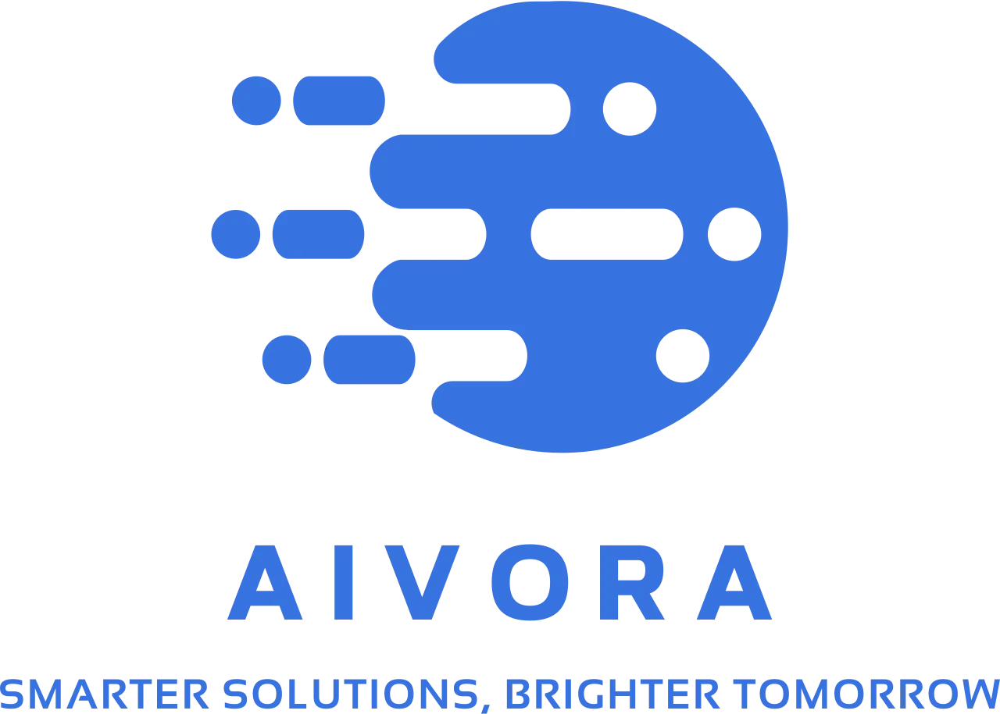

안녕하세요, 반갑습니다!
여러분은 지금부터 Aivora에서 직접 제작한 AI 면접 시스템을 체험하시게 됩니다.
이 시스템은 실제 채용 과정에서 활용될 수 있도록 저희 Aivora가 직접 설계한 면접 프로그램입니다. 질문 제시부터 답변 평가까지 회사가 정한 기준을 바탕으로 AI 면접관이 모든 과정을 진행합니다. 즉, 여러분의 답변은 AI 면접관이 직접 분석하고 평가하게 됩니다.
이번 실험에서는 실제 면접과 유사한 환경 속에서 여러분이 지원자의 입장이 되어 질문에 응답하시게 됩니다.
모든 응답에는 준비 시간이 주어지며, 준비 시간이 끝나면 자동으로 녹음이 시작됩니다.
답변 시간은 1분이며, 최소 30초 이상 말씀해주셔야 다음 화면으로 넘어갈 수 있습니다.
인터뷰를 시작하기 전, 카메라와 마이크가 잘 작동하는지 확인하겠습니다.
마이크에 소리를 내면 아래 막대가 움직입니다.

답변이 저장되었습니다!
AI 면접관이 다음 문제를 출제할 때까지 잠시만 기다려주세요.
축하드립니다! 귀하는 1차 AI 면접에서 합격하셨습니다. 이번 평가에서 AI 면접관은 귀하의 답변을 다양한 요소로 분석하여 종합적으로 판단했습니다.
AI 면접관의 평가 결과:
이러한 점들을 근거로, AI 면접관은 귀하를 합격 기준 충족자로 판정하였습니다. 따라서 귀하는 다음 단계 면접 평가로 이어질 기회를 얻게 되셨습니다.
다시 한 번 합격을 축하드립니다.
감사합니다.
Aivora AI 면접관 드림
안녕하세요. 아쉽게도 귀하는 1차 AI 면접 평가에서 불합격하셨습니다. 이번 평가에서 AI 면접관은 귀하의 답변을 다양한 요소로 분석하여 종합적으로 판단했습니다.
AI 면접관의 평가 결과:
이러한 점들을 근거로, AI 면접관은 귀하를 합격 기준 미충족자로 판정하였습니다. 비록 이번에는 아쉬운 결과를 받으셨지만, 평가에서 드러난 부족한 부분들을 보완한다면 향후 더 좋은 성과를 거두실 수 있을 것이라 기대됩니다.
이번 면접에 참여해주셔서 감사드리며, 귀하의 발전을 응원합니다.
감사합니다.
Aivora AI 면접관 드림